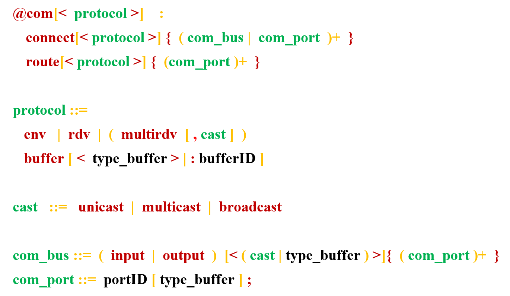
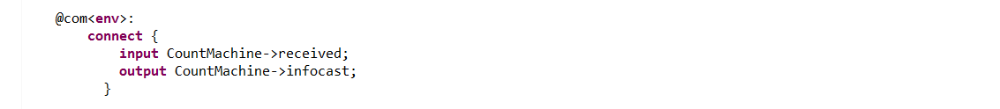
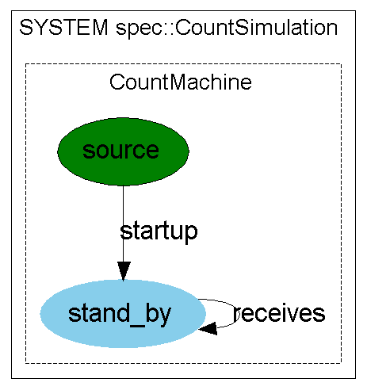
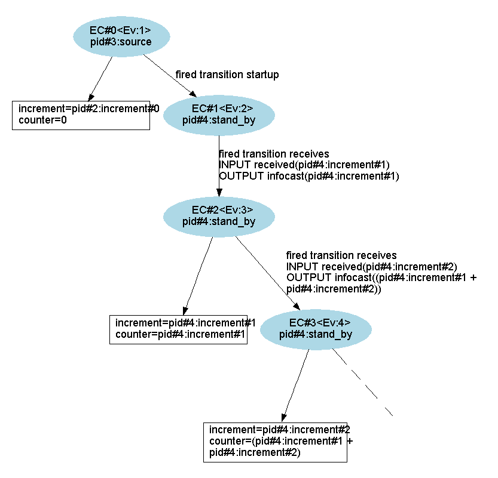
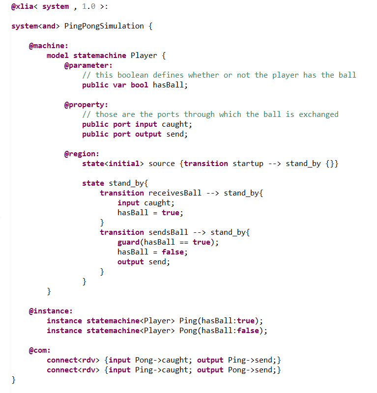
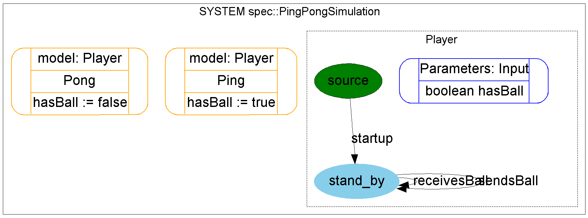
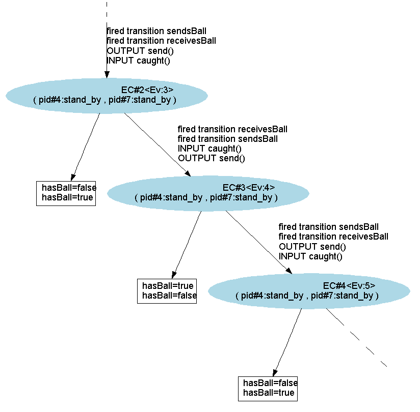

The "@com:" section describes interactions between machines, or between a machine and the environment, via ports and according to a given protocol.
The syntax for this section is the following (see BNF syntax) :
The protocol tells whether the communication is between a machine and the environment ("env"), or between two machines ("rdv").
When several input/outputs are possible ("multirdv"), constraints can be added via the cast option :
Remark : If there are several senders, messages should be without parameters: otherwise, it would not be possible to know which parameter is collected by a receiver.
The "buffer" keyword indicates that a message or signal must be stored in a buffer.
A default protocol can be given just after the section name.
The "connect" keyword connects two ports or buses, possibly via a buffer.
The "route" keyword indicates where to store information in the case of a signal.
Remark : The "rdv" mode is not implemented for signals, thus it is not compatible with keyword "route".
In this example system, a state-machine is given integers. Each time it receives an integer, it adds it to a counter that is initialized at 0 at the beginning of the simulation. Diversity can provide a simulated external environment for this system. This environment will be used to generate the random integers that are thrown to the state-machine.
As seen in the code below, the state-machine receives integers through the 'received' port. To indicate that we want Diversity to simulate data entry on this port, we use the "@com:" section. The syntax is as used in the code below. We indicate that we want to connect to the environment (keyword/protocol 'env') :
Alternatively, we can put the 'env' keyword modifier next to 'com' as seen below. This way, all the connections described will be 'env' connections.
As seen in the exploration graph below, the state-machine evolves thanks to the input simulated by the environment :
 In this example two state-machines, which represent players, exchange a single ball between them. The ball is 'send' and 'caught' through the ports of the same names in the two machines. In the "@com:" section, we'll use two different 'rdv' ('rendez-vous' protocol) type connections :
NB: in this example, we make us of the "model-instance paradigm" :
As we can see in the execution graph below, the behavior of the system is what we expected; alternatively the booleans 'hasBall' of the two state-machines are exchanged :
 